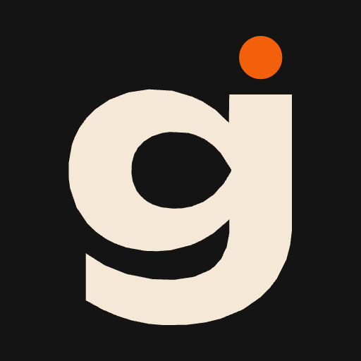

Unbounded 700, крапка акцентом — той самий рецепт, що в «Каруселі.». Висота плитки знака — 1.8 кегля логотипу (плитка має внутрішнє поле, тому вона вища за прописну літеру), відступ до слова — 0.28 висоти плитки.

Знак — обрізана монограма g: літера більша за поле й виходить за нижній край, акцентна крапка у верхньому правому куті. Літера — обведений контур гліфа з Unbounded 700, не текст: assets/logo/gortai-mark.svg. На 32 і 16px крапка знята, літера перецентрована й не зрізається. Maskable — єдина версія без обрізання: Android ріже кути, тож знак сидить у центральних 60% на суцільному інку.
Охоронне поле — 12% сторони від краю знака. Мінімальний розмір 16px. theme-color #141414 для темної теми, #F5E8D7 для світлої. Не обертати знак, не міняти колір крапки, не ставити обрізану версію під маску, не розтягувати літеру, не додавати обведення чи тінь.
"icons": [
{ "src": "gortai-icon-192.png", "sizes": "192x192", "type": "image/png", "purpose": "any" },
{ "src": "gortai-icon-512.png", "sizes": "512x512", "type": "image/png", "purpose": "any" },
{ "src": "gortai-icon-maskable-512.png", "sizes": "512x512", "type": "image/png", "purpose": "maskable" }
]